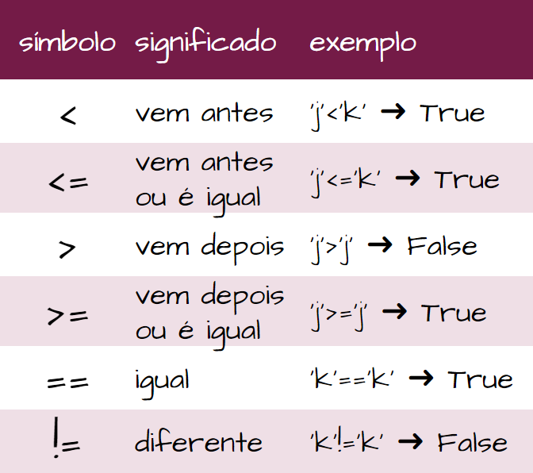

Material de apoio para a disciplina Linguagem de Programação da UACSA/UFRPE - 2020.1
Produzido pelo prof. João Pimentel
Ok, vamos começar com um desafio: coloque essas palavras em ordem.
Olha aí, mesmo sem eu explicar nada você já entendeu a metade do assunto! De forma simplificada, podemos dizer que a comparação de strings em Python é baseada na ordem lexicográfica - isto é, a ordem alfabética, ou a ordem do dicionário.
Esse tipo de comparação serve, por exemplo, para que os contatos na agenda do seu celular fiquem na ordem correta. Outro exemplo: para filtrar os produtos por marca em uma loja online.
Vamos comparar duas palavras: "aeroporto" e "boca". Mesmo sendo uma palavra mais longa, "aeroporto" vem antes de "boca" no dicionário, né?
E se a gente comparar "g" e "p", quem vem antes? O "g", com certeza!
Lembra que na comparação de números utilizamos os símbolos >, >=, < e <=?
Esses mesmos símbolos são utilizados para compararmos textos (strings), mas com o significado um pouquinho diferente. Se uma string é "menor" que a outra, quer dizer que ela vem antes no dicionário.
Já se uma string é "maior", quer dizer que ela vem depois.
print('a' < 'f')
resultado: True, o que quer dizer que 'a' vem antes de 'f'.
print('a' > 'f')
resultado: False, o que quer dizer que 'a' não vem depois de 'f'.
print('s' > 'm')
resultado: True, o que quer dizer que 's' vem depois de 'm'.
print('x' > 'z')
resultado: False, o que quer dizer que 'x' não vem depois de 'z'.
Estranho, né?
Quando um assunto é estranho, é por que ainda não nos acostumamos com ele. Para nos acostumar, vamos praticar! Lembre-se: o que vem depois é "maior".
Ok, acho que você já entendeu o que acontece quando as strings só têm 1 caractere. Mas o que acontece quando as strings têm vários caracteres? Por exemplo: "areia" e "arenoso", quem é menor? Quem é maior?
Na pressa, a gente pode pensar: "arenoso é uma palavra mais longa, então ela é maior". Só que quando a gente compara strings, menor e maior querem dizer "vem antes ou vem depois?", lembra?
Então... como é que funciona?
Funciona assim: o Python compara as duas strings caractere por caractere. Veja exemplos nesse vídeo (4min):
O computador compara a ordem das strings com base na tabela de caracteres que está sendo utilizada. A mais comum é a unicode . Lá você pode ver, por exemplo, que #, ! e $ vêm antes dos números, os números vêm antes das letras, a ? vem depois dos números mas antes das letras, as letras maiúsculas vêm antes das minúsculas, e as letras com acento vêm depois das letras sem acento.
Vale a pena decorar isso? Eu acredito que não.
Para terminar, fique com esse resumo dos símbolos para comparação de strings:
animação Card flip: David DeSandro